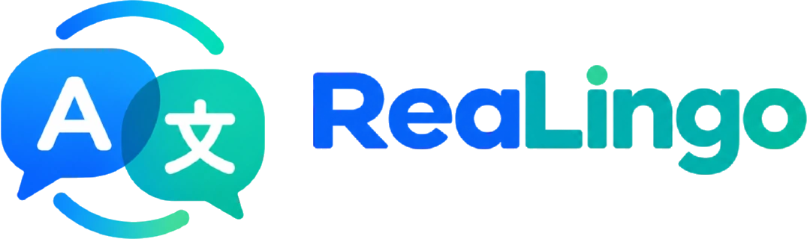
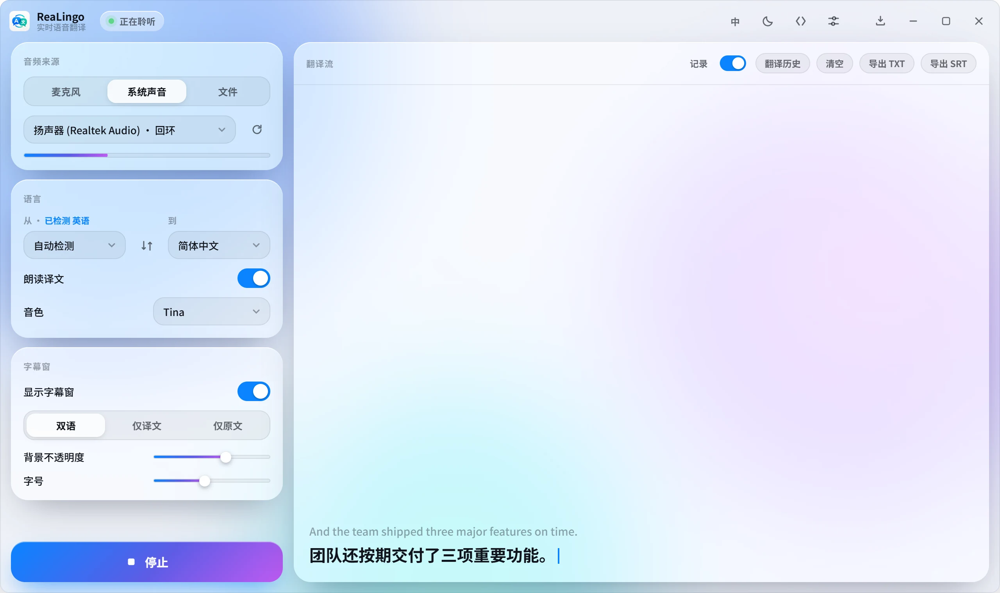

ReaLingo
ReaLingo
ReaLingo
ReaLingo

开会、看视频、上网课时，把麦克风、系统声音或音频文件交给它，译文实时浮在任何窗口上。开源免费，自带百炼 API Key 即可。In a meeting, a video or a lecture: hand it your mic, system audio or a file, and the translation floats live over any window. Free and open source — bring your own Model Studio key.
0.5 新增：朗读译文 · 看宣传片 ›New in 0.5: read aloud · watch the film ›
Windows、macOS、Ubuntu 各有安装包，页面会自动推荐你的系统对应的那个。Installers for Windows, macOS and Ubuntu — this page picks the one for your system.
到 百炼控制台 拿一个 Key（新加坡地域用 国际站），粘贴到设置页。它存进系统凭据库，不写进配置文件。Get a key from the Model Studio console and paste it in Settings. It goes into the OS keychain, not a config file.
麦克风、系统声音或音频文件三选一，选好目标语言，打开字幕窗，点「开始翻译」。Microphone, system audio or a file; choose the target language, open the overlay, press Start.
下面这些就是设置里的真实选项，动一动看效果。字幕窗默认置顶，锁定后鼠标点击穿透，在它上面右键还能直接改这些设置。These are the real settings — try them. The overlay stays on top, lets clicks through when locked, and takes a right-click to change all this in place.
Photosynthesis turns sunlight into chemical energy.
光合作用把光能转化为化学能。
Qwen3.5-LiveTranslate 支持 60 种语言互译，源语言可以自动检测。带喇叭图标的可以朗读译文；也能切回旧模型 Qwen3（18 种）。Qwen3.5-LiveTranslate covers 60 languages, with automatic source detection. The ones with a speaker can be read aloud; the older Qwen3 model (18) is still selectable.
| 麦克风Mic | 系统声音System audio | 朗读时排除自身Leaves its own voice out | 说明Notes | |
|---|---|---|---|---|
| Windows 10 / 11 | ✓ | ✓ | ✓ | WASAPI 回录；朗读时改用 process loopback（Windows 10 2004+）WASAPI loopback; process loopback while reading aloud (Windows 10 2004+) |
| macOS 14.4+ | ✓ | ✓ | ✓ | Core Audio tap；首次使用按提示授权Core Audio tap; grant access when asked |
| macOS 12 – 14.3 | ✓ | — | — | process tap 是 14.4 才有的系统接口Process taps arrived in 14.4 |
| Ubuntu 22.04+ | ✓ | ✓ | — | PulseAudio / PipeWire 的 monitor 源；录系统声音时不朗读PulseAudio / PipeWire monitor sources; no read-aloud while capturing system audio |
ReaLingo 本身开源免费。翻译由阿里云百炼提供，按你自己账号的用量计费，具体价格以百炼官网为准。ReaLingo is free and open source. Translation runs on your own Alibaba Cloud Model Studio account and is billed to it — see their pricing.
跟你的百炼账号走：国内站的 Key 选北京，国际站的 Key 选新加坡。设置页底部会显示最终连接的地址；业务空间 ID 选填，填了走专属域名。Match your account: China-site keys use Beijing, international keys use Singapore. Settings shows the exact endpoint; a workspace ID is optional and switches to its dedicated domain.
应用没有经过 Apple 公证。把它拖进「应用程序」后，在终端执行 xattr -dr com.apple.quarantine /Applications/ReaLingo.app，或到「系统设置 → 隐私与安全性」点「仍要打开」。升级后系统声音没反应，就在「屏幕与系统录音」里删掉 ReaLingo 重新授权。It is not notarised. After moving it to Applications, run xattr -dr com.apple.quarantine /Applications/ReaLingo.app, or click “Open Anyway” in System Settings → Privacy & Security. If system audio goes quiet after an update, remove ReaLingo under Screen & System Audio Recording and grant it again.
录系统声音时不会：Windows 和 macOS 都会把 ReaLingo 自己的进程排除在采集之外，Linux 上则不朗读。用麦克风时，扬声器的声音会被物理地收进去，请戴耳机。Not with system audio: Windows and macOS leave ReaLingo’s own process out of the capture, and Linux does not speak at all. With a microphone the speakers are physically picked up — use headphones.
默认不保存。打开翻译流右上角的「记录」后，每场存成 app-data/history/ 下的一个 JSONL 文件，可以在「翻译历史」里打开文件夹、导出或删除。Nothing is saved by default. Turn on “Record” and each session becomes one JSONL file in app-data/history/, which the History panel can open, export or delete.
用 apt 装本地包，依赖会一起装上：sudo apt install ./ReaLingo_*_amd64.deb。用 dpkg -i 不会解析依赖。Install with apt so the dependencies come along: sudo apt install ./ReaLingo_*_amd64.deb. dpkg -i resolves none of them.